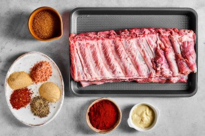
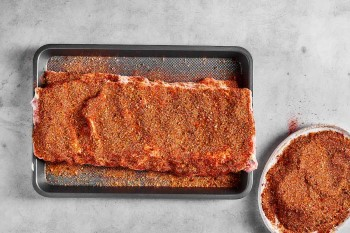
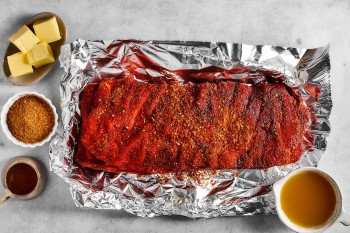
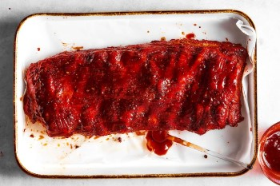
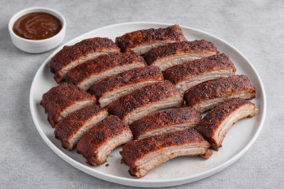

Instructions
Prep

- Preheat the oven to 275°F and line a baking sheet with foil
-
Use a paper towel to remove the membrane from the back of the ribs
*Optionally: use a chef's knife to trim off extra fat or other unwanted parts of the ribs
- Rinse the ribs off with water in the sink, then pat them dry with a paper towel
- Cover both sides of the ribs in yellow mustard and liquid smoke
-
Season all sides of the ribs with salt, pepper, and the rib rub, making sure to
season the meat side a bit heavier
*The meat side is the side of the ribs with more meat. In the prep picture above, the meat side is facing down and the boney side is facing the camera
Bake Low & Slow, Uncovered (the "3")

- Place the ribs onto the tinfoil lined baking sheet, meat side up
- Place the sheet on the center rack in the oven and let bake for 3 hours
- Mix apple cider vinegar, butter, and hot honey in a mixing bowl to make the basting mixture
- Use the basting brush to lightly brush the ribs with the basting mixture every 30 minutes while they bake
Bake Low & Slow, Covered (the "2")

- While the ribs are still in the oven during the previous step, we will begin prepping for this phase
- Cut a section of tinfoil that is about 2.5x as long as the rack of ribs
-
In the middle of this tinfoil spread softened butter,
sprinkle brown sugar, and drizzle hot honey.
*The tinfoil mixture spread should be about the size of the rack of ribs
- After the previous 3 hours of cooking is done, take the ribs out of the oven
- Use tongues to place the ribs meat-side down onto the previously prepared, new section of tinfoil
-
Fully cover the ribs in the tinfoil
*Add more pieces of tinfoil if necessary
- Discard the old tinfoil from the baking sheet, then place the now covered ribs onto the baking sheet, meat side down
- Return the ribs to the oven and let bake for 2 hours
Let Crisp (the "1")

- After the previous 2 hours of cooking is done, remove the ribs from the oven
- Heat the oven to 325°F
- Uncover the ribs and discard the tinfoil. Then place the ribs onto the baking sheet, meat side up
-
Once the oven has reached 325°F, return the ribs to the oven and let bake for 30 minutes to 1 hour
*Be careful not to let the ribs burn as they crisp
Serving

-
Remove the ribs from the oven and let rest for about 10 minutes
*Optionally: use a basting brush to brush your favorite BBQ sauce onto the ribs
- Use a chef's knife to cut between each bone, making thin slices of ribs
- Place the slices onto a serving dish and serve. Enjoy!